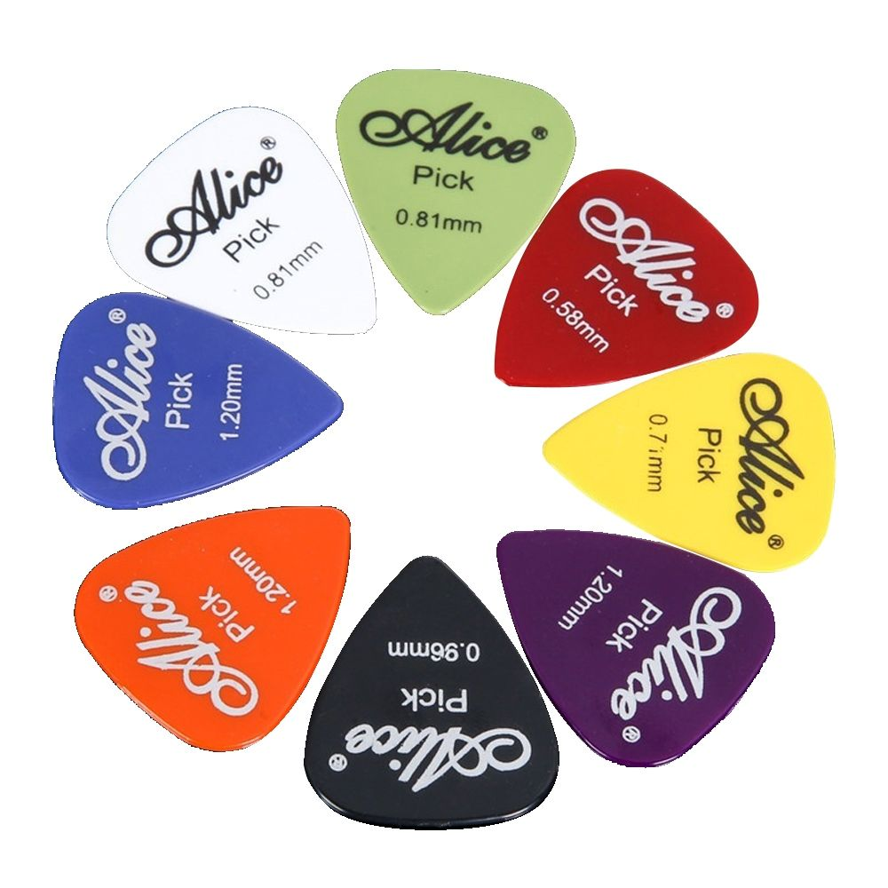
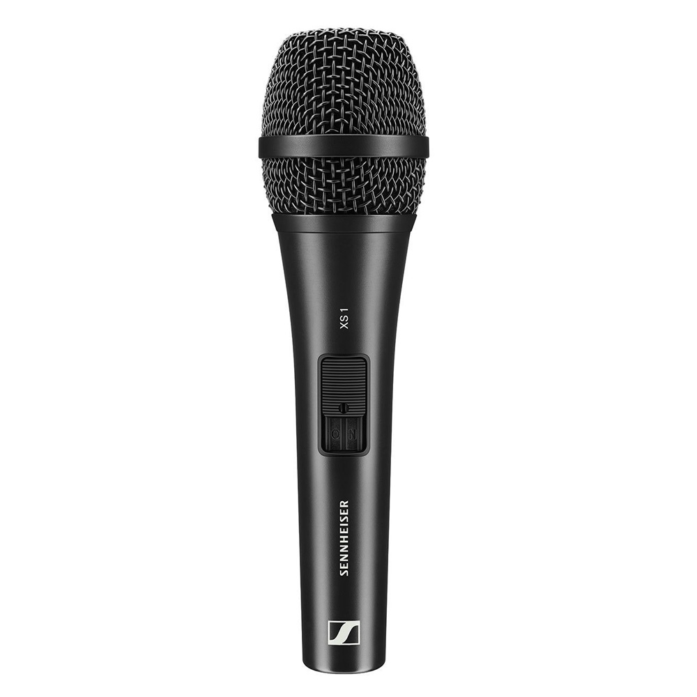
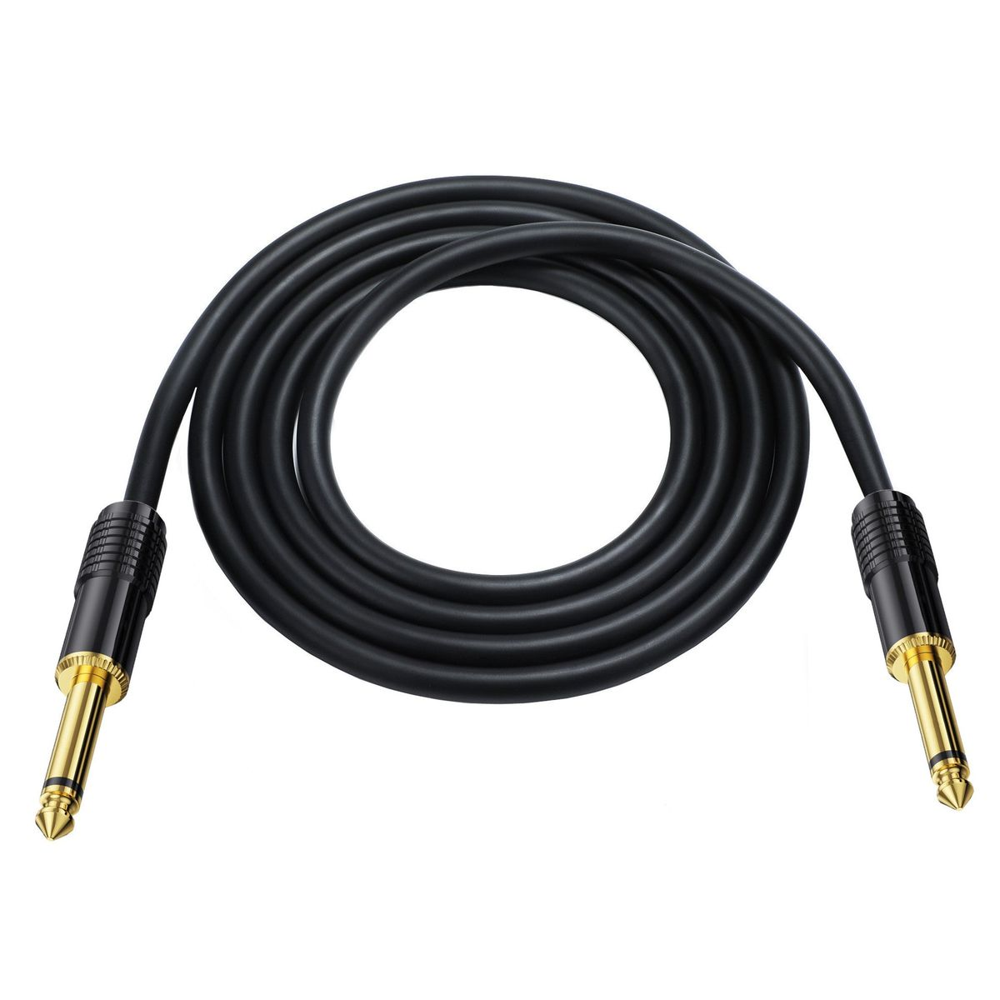
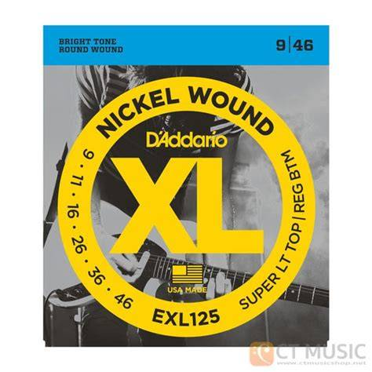

อุปกรณ์เสริม

ปิ๊กสำหรับ กีตาร์
ราคา: 20 บาท
- ขาว
- เขียว
- แดง
- เหลือง
- ม่วง
- ดำ
- ส้ม
- น้ำเงิน

Sennheiser XS1
ราคา: 2,690 บาท
- ลักษณะการรับเสียงแบบคาร์ดิโออิด
- คุณภาพเสียงที่ชัดเจนและเต็มอิ่ม
- โครงสร้างโลหะที่ทนทาน
- สวิตช์ปิดเสียงที่สะดวก
- แคปซูลแบบ Shock-Mounted

Franken Cable Pro Instrument Cable สายแจ็ค
1,400 บาท
- ให้สัญญาณ Flat ไม่ปนโทนเข้าไปในอุปกรณ์
- ทองแดงบริสุทธิ์ คุณภาพ สูง
- หัวสัญญาณแบบ TS 1/4″

D’Addario EXL-125 Super Light สายกีตาร์ไฟฟ้า Electric Guitar String
ราคา: 230 บาท
- สำหรับกีต้าร์ไฟฟ้า
- จำนวน 6 สาย
- สายไม่เคลือบ
- ขนาดสาย 009, .011, .016, .026, .036, .046
- ทำจากโลหะสตีล
- ชุบนิกเกิล